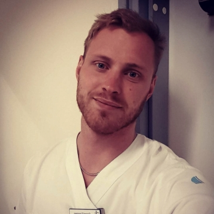

AT-läkare, Landstinget Dalarna
Läkarprogrammet
Örebro universitet
Bor i: Falun
Kommer från: Karlskoga
Som AT-läkare arbetar man på avdelning med administrativt arbete, behandlingar och utredningar för inneliggande patienter. På akutmottagningen spenderar man mycket tid där man handlägger akutfallen som kommer in. Man har även en del planerad mottagning och får assistera på operationer.
Det absolut bästa med jobbet är patientkontakten och hur otroligt brett yrket är med kirurgi, medicin, röntgen och en massa annat. Ingen dag är riktigt den andra lik och det finns alltid något man kan lära sig. Den där känslan av att initialt handlägga en akut hjärtinfarkt, intoxikation eller bara kunna lugna en orolig patient på akuten är otroligt givande och man har en stor inverkan på andra människors liv.
Om 5 år kommer jag ha kommit en bra bit in som ST-läkare och därmed närma mig att bli färdig specialist inom något område, dock har jag ännu ej siktat in mig på något specifikt, det finns idag 44 olika grundspecialiteter så man har mycket att välja mellan. Det finns även möjlighet att doktorera samt arbeta med läkemedelsföretag eller andra myndigheter.
Jag började studera direkt efter mina gymnasiestudier och främsta skälet till detta var nog finanskrisen och det faktum att det var brist på jobb. Annars hade jag tagit några år för att arbeta och resa.
Under mitt andra år på apotekarprogrammet började jag känna att det inte var rätt yrke för mig, utan att jag ville ha mer patientkontakt och följa patienterna över längre tid. Örebro universitet startade då precis upp läkarutbildningen som det sjunde universitetet i Sverige. Kombinationen av nystartad utbildning med stor chans att påverka innehållet och bygga upp studentlivet samt att det var nära mina hemtrakter gjorde att jag valde Örebro över andra studieorter, även om jag hade ett HP-resultat där jag kunde välja vilket jag ville.
Det bästa med Örebro är studentlivet som vuxit otroligt mycket senaste 5-6 åren och staden som helhet. Det finns ett brett utbud av nöjesaktiviteter, bra studentkultur och man har nära till större städer som Stockholm och Göteborg.
Jag hade försökt arbeta några år och sedan påbörjat mina studier i Örebro. Jag trivdes bra i staden och fick riktigt bra vänner för livet som jag fortfarande träffar regelbundet. Jag var väldigt föreningsaktiv och skulle vara det igen med tanke på hur givande och utvecklande det var.
Efter examen fick jag jobb som Underläkare på en vårdcentral i Falun innan jag påbörjade min AT-tjänst. Vårdcentraler och andra enheter skriker efter personal så man har en god arbetsmarknad efter examen.
Som individ är jag verkligen inte smart och mina gymnasiebetyg var åt det lägre hållet. Men om man hittar något man brinner för och är disciplinerad så kommer man att kunna klara av studierna även om det tidvis är kämpigt.
Jag var starkt föreningsaktiv och arbetade en hel del med att starta upp IFMSA (International Federation of Medical Students' Associations) i Örebro. En bred förening som finns i hela världen och arbetar för forskning och kliniska utbyten mellan länder, folkhälsa och mycket annat. Lokalt i Örebro tog vi årligen emot utbytesstudenter, anordnade sexualupplysning för högstadieelever, arbetade med papperslösas rätt till vård, nallesjukhus där dagisbarn får komma med sjuka leksaksdjur och mycket annat.
Skapad 2018-09-01.